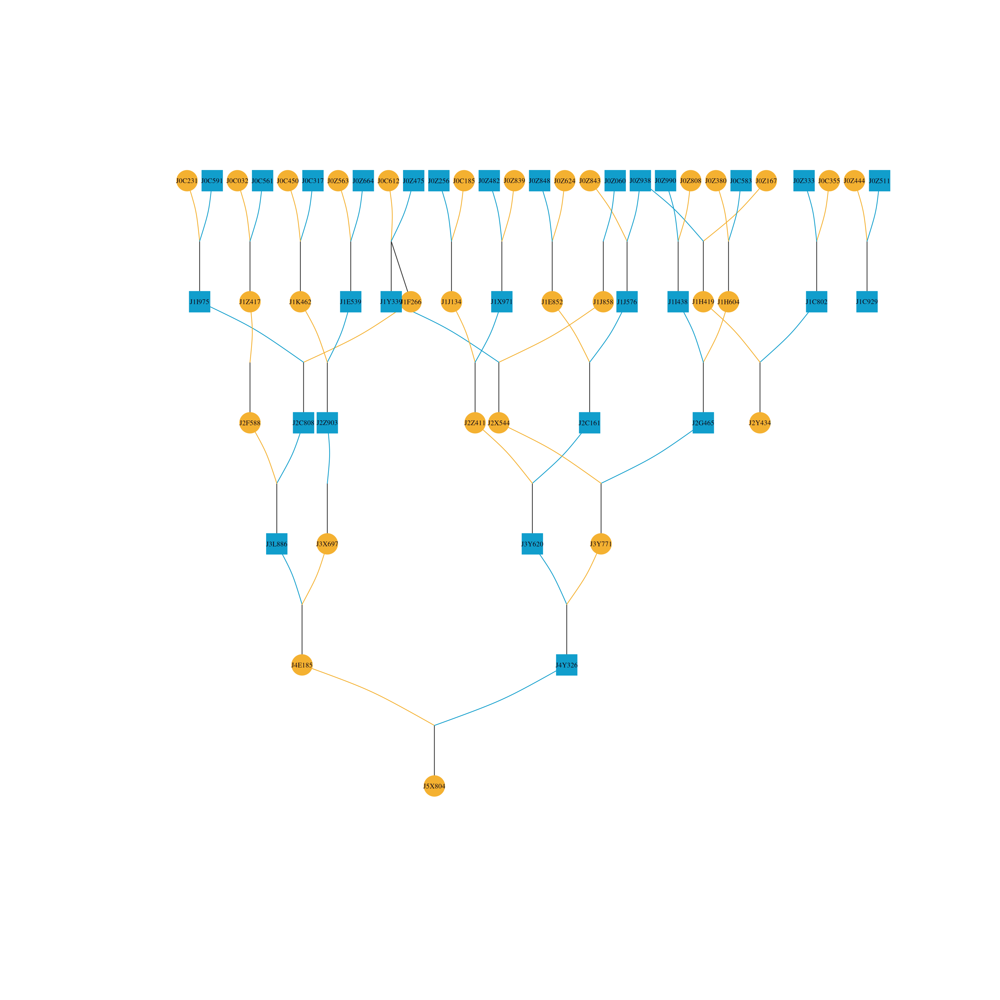
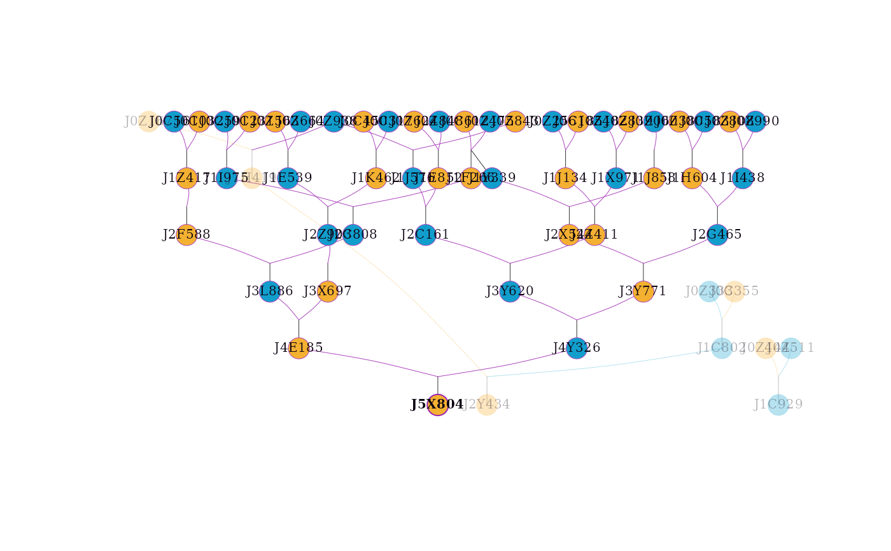
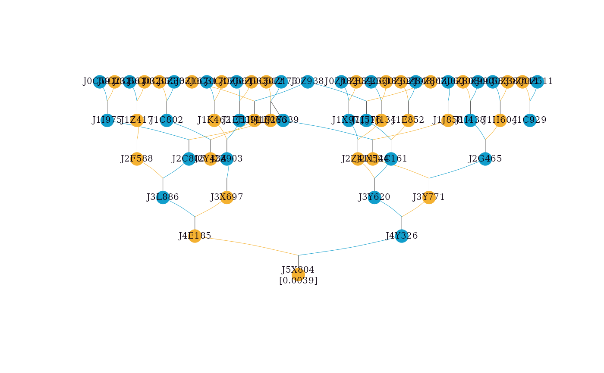
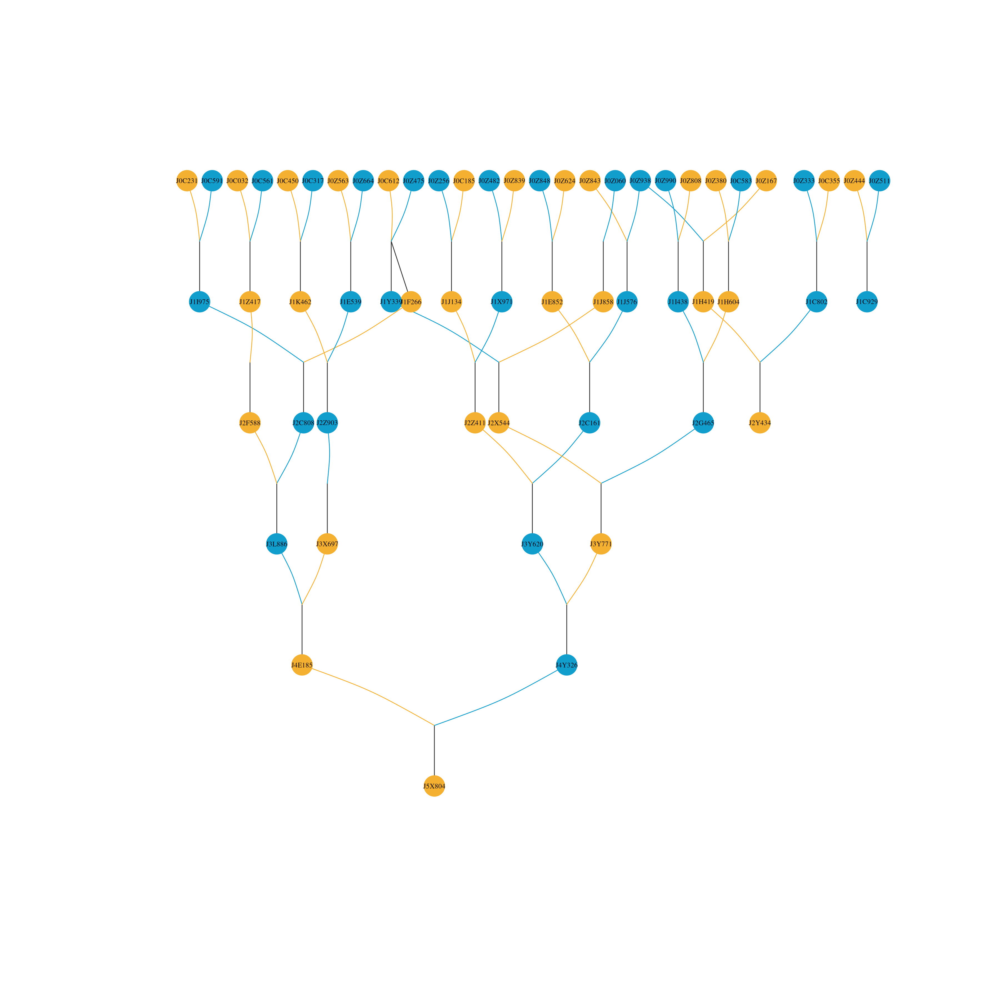
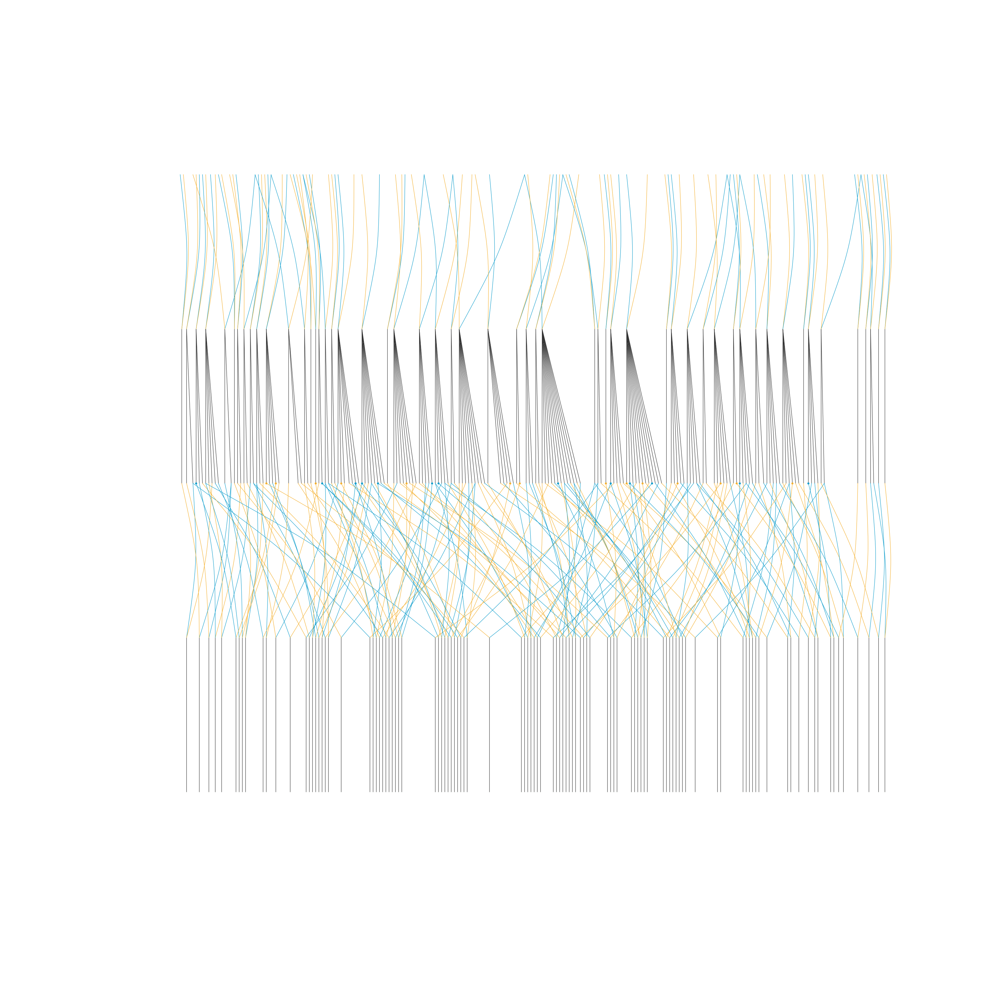

visped function draws a graph of a full or compact pedigree.
Usage
visped(
ped,
compact = FALSE,
outline = FALSE,
cex = NULL,
showgraph = TRUE,
file = NULL,
highlight = NULL,
trace = FALSE,
showf = FALSE,
pagewidth = 200,
symbolsize = 1,
maxiter = 1000,
...
)Arguments
- ped
A
tidypedobject (which inherits fromdata.table). It is recommended that the pedigree is tidied and pruned by candidates using thetidypedfunction with the non-null parametercand.- compact
A logical value indicating whether IDs of full-sib individuals in one generation will be removed and replaced with the number of full-sib individuals. For example, if there are 100 full-sib individuals in one generation, they will be replaced with a single label "100" when
compact = TRUE. The default value is FALSE.- outline
A logical value indicating whether shapes without labels will be shown. A graph of the pedigree without individual labels is shown when setting
outline = TRUE. This is useful for viewing the pedigree outline and identifying immigrant individuals in each generation when the graph width exceeds the maximum PDF width (500 inches). The default value is FALSE.- cex
NULL or a numeric value changing the size of individual labels shown in the graph. cex is an abbreviation for 'character expansion factor'. The
vispedfunction will attempt to estimate (cex=NULL) the appropriate cex value and report it in the messages. Based on the reported cex from a previous run, this parameter should be increased if labels are wider than their shapes in the PDF; conversely, it should be decreased if labels are narrower than their shapes. The default value is NULL.- showgraph
A logical value indicating whether a plot will be shown in the default graphic device (e.g., the Plots panel in RStudio). This is useful for quick viewing without opening a PDF file. However, the graph on the default device may not be legible (e.g., overlapping labels or aliasing lines) due to size restrictions. It is recommended to set
showgraph = FALSEfor large pedigrees. The default value is TRUE.- file
NULL or a character value specifying whether the pedigree graph will be saved as a PDF file. The PDF output is a legible vector drawing where labels do not overlap, even with many individuals or long labels. It is recommended to save the pedigree graph as a PDF file. The default value is NULL.
- highlight
NULL, a character vector of individual IDs, or a list specifying individuals to highlight. If a character vector is provided, individuals will be highlighted with a purple border while preserving their sex-based fill color. If a list is provided, it should contain:
ids: (required) character vector of individual IDs to highlight.frame.color: (optional) hex color for the border of focal individuals.color: (optional) hex color for the fill of focal individuals.rel.frame.color: (optional) hex color for the border of relatives (used whentraceis not NULL).rel.color: (optional) hex color for the fill of relatives (used whentraceis not NULL).
For example:
c("A", "B")orlist(ids = c("A", "B"), frame.color = "#9c27b0"). The function will check if the specified individuals exist in the pedigree and issue a warning for any missing IDs. The default value is NULL.- trace
A logical value or a character string. If TRUE, all ancestors and descendants of the individuals specified in
highlightwill be highlighted. If a character string, it specifies the tracing direction: "up" (ancestors), "down" (descendants), or "all" (union of ancestors and descendants). This is useful for focusing on specific families within a large pedigree. The default value is FALSE.- showf
A logical value indicating whether inbreeding coefficients will be shown in the graph. If
showf = TRUEand the column f is missing,visped()will try to compute it automatically withinbreedon a structurally complete pedigree. If automatic computation is not possible, a warning is issued and labels are drawn without f. The default value is FALSE.- pagewidth
A numeric value specifying the width of the PDF file in inches. This controls the horizontal scaling of the layout. The default value is 200.
- symbolsize
A numeric value specifying the scaling factor for node size relative to the label size. Values greater than 1 increase the node size (adding padding around the label), while values less than 1 decrease it. This is useful for fine-tuning the whitespace and legibility of dense graphs. The default value is 1.
- maxiter
An integer specifying the maximum number of iterations for the Sugiyama layout algorithm to minimize edge crossings. Higher values (e.g., 2000 or 5000) may result in fewer crossed lines for complex pedigrees but will increase computation time. The default value is 1000.
- ...
Additional arguments passed to
plot.igraph.
Value
The function mainly produces a plot on the current graphics device and/or a PDF file. It invisibly returns a list containing the graph object, layout coordinates, and node sizes.
Details
This function takes a pedigree tidied by the tidyped function and outputs a hierarchical graph for all individuals in the pedigree. The graph can be shown on the default graphic device or saved as a PDF file. The PDF output is a legible vector drawing that is legible and avoids overlapping labels. It is especially useful when the number of individuals is large and individual labels are long.
Rendering is performed using a Two-Pass strategy: edges are drawn first to ensure center-to-center connectivity, followed by nodes and labels. This ensures perfect visual alignment in high-resolution vector outputs. The function also supports real-time ancestry and descendant highlighting.
This function can draw the graph of a very large pedigree (> 10,000 individuals per generation) by compacting full-sib individuals. It is highly effective for aquatic animal pedigrees, which usually include many full-sib families per generation in nucleus breeding populations. The outline of a pedigree without individual labels is still shown if the width of a pedigree graph exceeds the maximum width (500 inches) of the PDF file.
In the graph, two shapes and four colors are used. Circles represent individuals, and squares represent families. Dark sky blue indicates males, dark goldenrod indicates females, purple indicates monoecious individuals (common in plant breeding, where the same individual serves as both male and female parent), and dark olive green indicates unknown sex. For example, a dark sky blue circle represents a male individual; a dark goldenrod square represents all female individuals in a full-sib family when compact = TRUE.
Note
Isolated individuals (those with no parents and no progeny, assigned Gen 0) are automatically filtered out and not shown in the plot. A message will be issued if any such individuals are removed.
See also
tidyped for tidying pedigree data (required input)
vismat for visualizing relationship matrices as heatmaps
pedmat for computing relationship matrices
splitped for splitting pedigree into connected components
plot.igraph underlying plotting function
Examples
library(visPedigree)
library(data.table)
# Drawing a simple pedigree
simple_ped_tidy <- tidyped(simple_ped)
visped(simple_ped_tidy,
cex=0.25,
symbolsize=5.5)

#> Label cex: 0.25. Symbol size: 5.5. Adjust 'cex' and 'symbolsize' if labels are too large or small.
#> Tip: Use 'file' to save as a legible vector PDF.
# Highlighting an individual and its ancestors and descendants
visped(simple_ped_tidy,
highlight = "J5X804",
trace = "all",
cex=0.25,
symbolsize=5.5)

#> Label cex: 0.25. Symbol size: 5.5. Adjust 'cex' and 'symbolsize' if labels are too large or small.
#> Tip: Use 'file' to save as a legible vector PDF.
# Showing inbreeding coefficients in the graph
simple_ped_tidy_inbreed <- tidyped(simple_ped, inbreed = TRUE)
visped(simple_ped_tidy_inbreed,
showf = TRUE,
cex=0.25,
symbolsize=5.5)

#> Label cex: 0.25. Symbol size: 5.5. Adjust 'cex' and 'symbolsize' if labels are too large or small.
#> Tip: Use 'file' to save as a legible vector PDF.
#> Note: Inbreeding coefficients of 0 are not shown in the graph.
# visped() will automatically compute inbreeding coefficients if 'f' is missing
visped(simple_ped_tidy,
showf = TRUE,
cex=0.25,
symbolsize=5.5)
#> Note: 'showf = TRUE' requested but 'f' column was missing. Calculated inbreeding coefficients automatically.
#> Label cex: 0.25. Symbol size: 5.5. Adjust 'cex' and 'symbolsize' if labels are too large or small.
#> Tip: Use 'file' to save as a legible vector PDF.
#> Note: Inbreeding coefficients of 0 are not shown in the graph.
# Adjusting page width and symbol size for better layout
# Increase pagewidth to spread nodes horizontally in the pdf file
# Increase symbolsize for more padding around individual labels
visped(simple_ped_tidy,
cex=0.25,
symbolsize=5.5,
pagewidth = 100,
file = tempfile(fileext = ".pdf"))
#> Pedigree saved to: /tmp/Rtmp6eLk6m/file1cb67b1c4ac2.pdf
#> Label cex: 0.25. Symbol size: 5.5. Adjust 'cex' and 'symbolsize' if labels are too large or small.

# Highlighting multiple individuals with custom colors
visped(simple_ped_tidy,
highlight = list(ids = c("J3Y620", "J1X971"),
frame.color = "#4caf50",
color = "#81c784"),
cex=0.25,
symbolsize=5.5)
 #> Label cex: 0.25. Symbol size: 5.5. Adjust 'cex' and 'symbolsize' if labels are too large or small.
#> Tip: Use 'file' to save as a legible vector PDF.
# Handling large pedigrees: Saving to PDF is recommended for legibility
# The 'trace' and 'tracegen' parameters in tidyped() help prune the graph
cand_labels <- big_family_size_ped[(Year == 2007) & (substr(Ind,1,2) == "G8"), Ind]
# \donttest{
big_ped_tidy <- tidyped(big_family_size_ped,
cand = cand_labels,
trace = "up",
tracegen = 2)
# Use compact = TRUE for large families
visped(big_ped_tidy,
compact = TRUE,
cex=0.08,
symbolsize=5.5,
file = tempfile(fileext = ".pdf"))
#> Note: Removed 351 isolated individuals (no parents, no progeny) from the plot.
#> Pedigree saved to: /tmp/Rtmp6eLk6m/file1cb617f51766.pdf
#> Label cex: 0.08. Symbol size: 5.5. Adjust 'cex' and 'symbolsize' if labels are too large or small.
#> Label cex: 0.25. Symbol size: 5.5. Adjust 'cex' and 'symbolsize' if labels are too large or small.
#> Tip: Use 'file' to save as a legible vector PDF.
# Handling large pedigrees: Saving to PDF is recommended for legibility
# The 'trace' and 'tracegen' parameters in tidyped() help prune the graph
cand_labels <- big_family_size_ped[(Year == 2007) & (substr(Ind,1,2) == "G8"), Ind]
# \donttest{
big_ped_tidy <- tidyped(big_family_size_ped,
cand = cand_labels,
trace = "up",
tracegen = 2)
# Use compact = TRUE for large families
visped(big_ped_tidy,
compact = TRUE,
cex=0.08,
symbolsize=5.5,
file = tempfile(fileext = ".pdf"))
#> Note: Removed 351 isolated individuals (no parents, no progeny) from the plot.
#> Pedigree saved to: /tmp/Rtmp6eLk6m/file1cb617f51766.pdf
#> Label cex: 0.08. Symbol size: 5.5. Adjust 'cex' and 'symbolsize' if labels are too large or small.
 # Use outline = TRUE if individual labels are not required
visped(big_ped_tidy,
compact = TRUE,
outline = TRUE,
file = tempfile(fileext = ".pdf"))
#> Note: Removed 351 isolated individuals (no parents, no progeny) from the plot.
#> Pedigree saved to: /tmp/Rtmp6eLk6m/file1cb64576f53d.pdf
# Use outline = TRUE if individual labels are not required
visped(big_ped_tidy,
compact = TRUE,
outline = TRUE,
file = tempfile(fileext = ".pdf"))
#> Note: Removed 351 isolated individuals (no parents, no progeny) from the plot.
#> Pedigree saved to: /tmp/Rtmp6eLk6m/file1cb64576f53d.pdf

# }